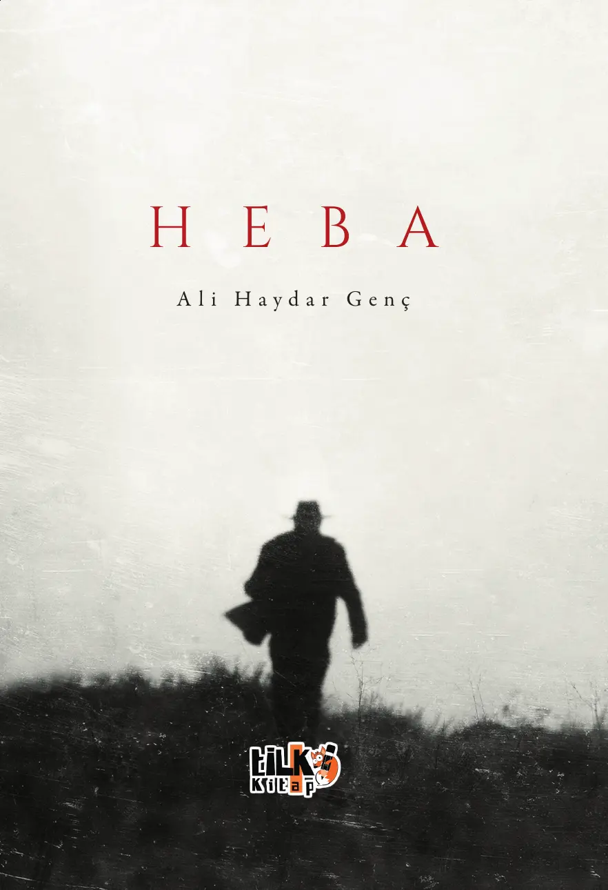
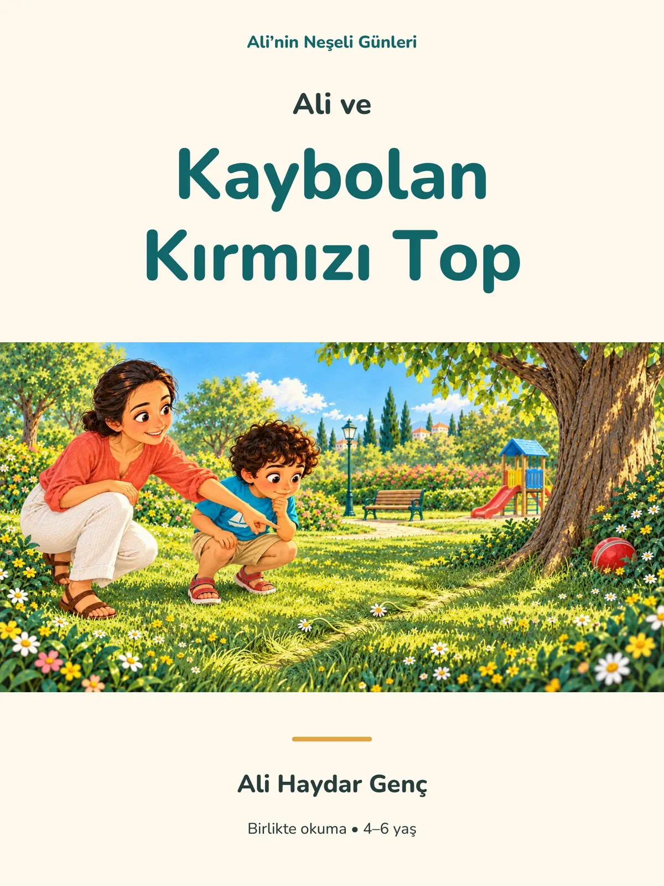
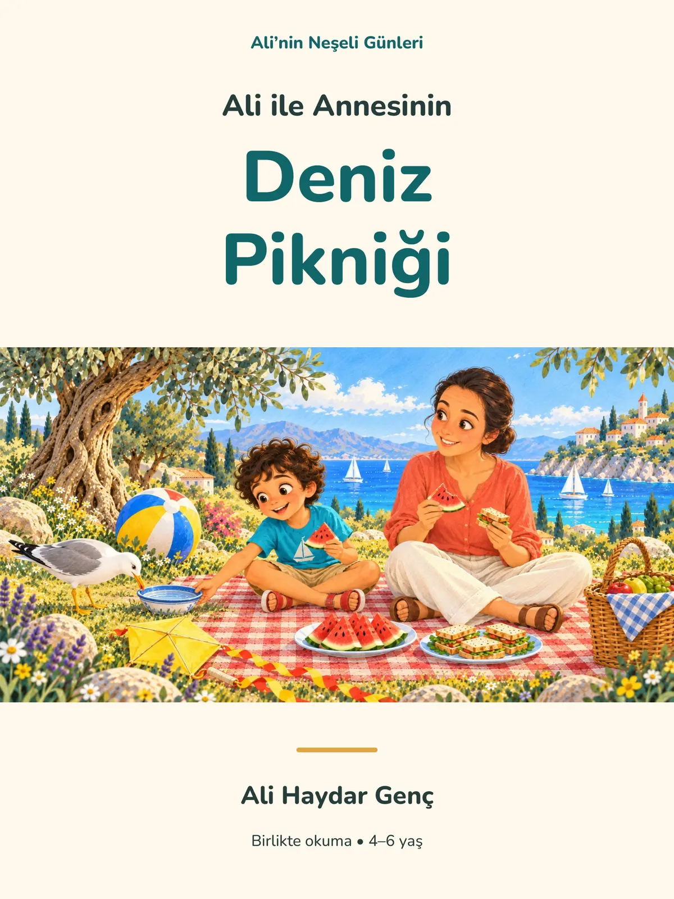

Veri ve analitik
Dağınık veriden anlaşılır kararlar çıkarmak.

Kontrolün hep bende olduğu bu hayatta, freni patlamış bir araba gibi nereye gideceğimi bilmediğim bir yola girmiştim.


Aile, merak ve gündelik hayatın küçük mucizeleri üzerine resimli hikâyeler. Ali’nin dünyasında kaybolan bir top da deniz kenarındaki bir piknik de yeni bir şey öğrenmenin başlangıcıdır.
Bütün kitapları keşfetVeriyi yalnızca raporlamıyorum. Gerçek iş akışlarını anlayıp, karar vermeyi ve gündelik operasyonu kolaylaştıran çalışan araçlara dönüştürüyorum.
Mal kabul, parti, SKT, tedarikçi ve maliyet yönetimi.
↗02HTML raporlarını görsel olarak düzenleme, öğe gizleme ve taşıma, kontrol ve nihai çıktı.
↗Excel ve CSV verilerinden KPI, grafik ve doğal dil analizi.
↗Alternatif rock’tan spoken word’e, Anadolu tınılarından akustik folk pop’a uzanan müzik denemeleri. Her parça başka bir duygunun sesli kaydı.
Yazıyla başlayan merak, veriye ve dijital üretime uzanan çok yönlü bir çalışma biçimine dönüştü.
1997’de Antalya’da doğdum. Aydın Adnan Menderes Üniversitesi Maliye Bölümü’nün ardından kariyerime maliyet kontrol alanında başladım; bugün raporlama ve veri analizi üzerine çalışıyorum. Dağınık bilgiyi anlaşılır bir yapıya dönüştürmek, hem mesleğimin hem de ürettiğim dijital araçların merkezinde.
Ortaokul yıllarından beri yazıyorum. İnsan ruhunun çelişkileri, yalnızlık, aidiyet ve geçmişin bıraktığı izler metinlerimin ana eksenini oluşturuyor. İlk kitabım Heba yayımlandı; onun devamı niteliğindeki Vefa üzerinde çalışmayı sürdürüyorum.
Dağınık veriden anlaşılır kararlar çıkarmak.
Duyguyu sade ve kalıcı bir anlatıya dönüştürmek.
Yeni üretim araçlarıyla farklı sesleri denemek.
Gerçek ihtiyaçları çözen işlevli sistemler kurmak.